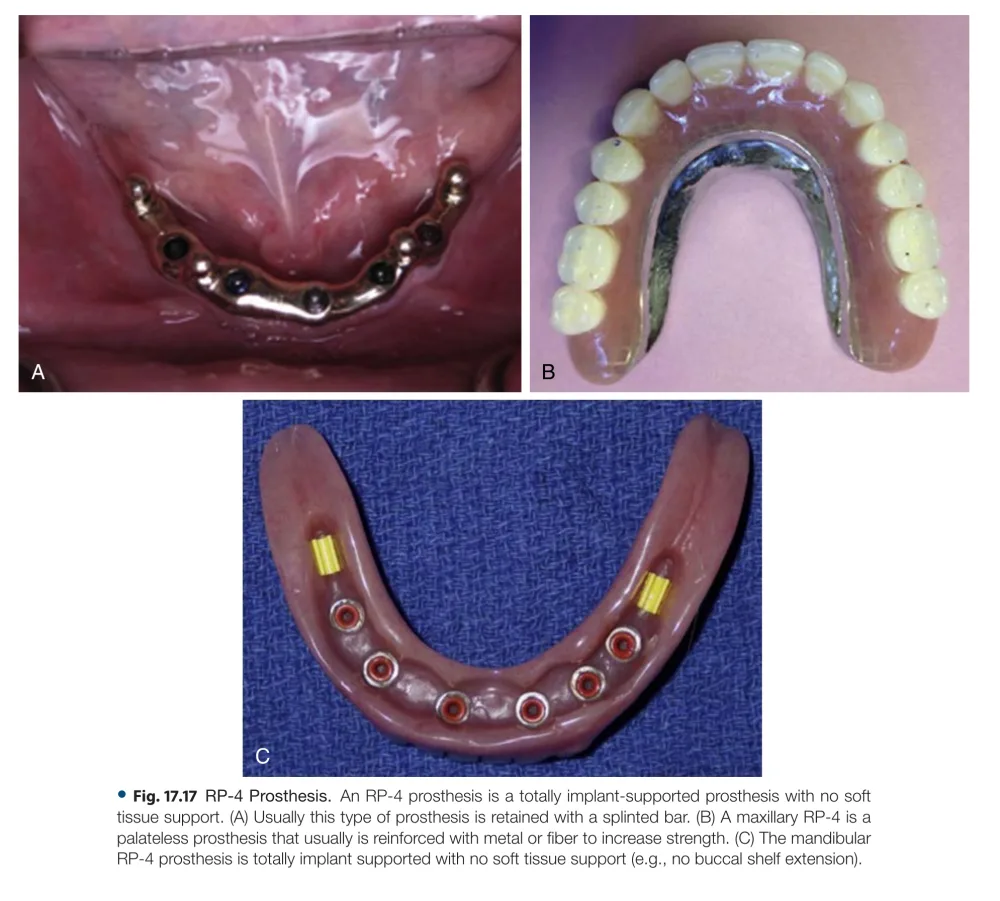
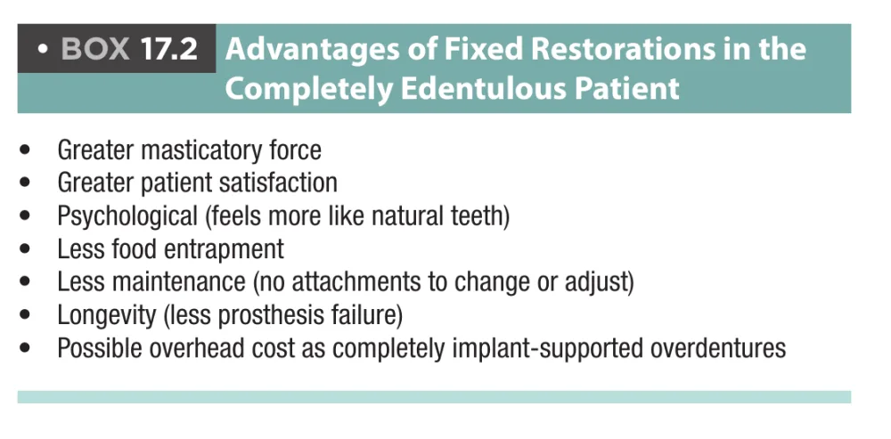

نسخه استخراجشده؛ ترجمه یا تأیید علمی انجام نشده است. وضعیت: captured
در درس نخست دیدی که RPها بر پایهی پشتیبانی طبقهبندی میشوند، نه ظاهر. این درس آن را با جزئیات باز میکند.
این نکته را دستکم نگیر: «دو دستهی متحرک با مقدار پشتیبانی ایمپلنت و بافت نرم تعیین میشوند.»
و جملهای که این نکته را قطعی میکند: «پروتز RP-4 ممکن است همان ظاهر ترمیم FP-1، FP-2 یا FP-3 را داشته باشد.»
حتی مثالی هم هست: «یک پروتز پرسلن روی فلز با اتصالات در تاجهای تکیهگاهی منتخب میتواند برای بیمارانی که خواستهی زیبایی یک FP را دارند ساخته شود.»
یعنی «متحرک» بهمعنای «شبیه دنچر» نیست. این یک سوءتفاهم رایج در گفتوگو با بیمار است و میتوانی همینجا آن را برطرف کنی.
RP-4 — بهطور کامل ایمپلنتپشتیبان:
«RP-4 یک پروتز متحرک است که بهطور کامل توسط ایمپلنتها، دندانها یا هر دو پشتیبانی میشود، بدون هیچ پشتیبانی بافت نرم.»
و ویژگی مکانیکیاش: «پروتز هنگام قرار گرفتن رژید است. اتصالات اوردنچر معمولاً پروتز متحرک را به یک بار بافتی کمارتفاع یا سوپراستراکچری که اباتمنتهای ایمپلنت را اسپلینت میکند متصل میکنند.»
«رژید هنگام قرار گرفتن» عبارت کلیدی است. RP-4 در دهان مثل یک پروتز ثابت رفتار میکند؛ تنها بیمار میتواند آن را خارج کند.
و شمار ایمپلنت لازم — این اعداد را حفظ کن:
«معمولاً پنج یا شش ایمپلنت در مندیبل و شش تا هشت ایمپلنت در ماگزیلا برای ساخت پروتزهای RP-4 کاملاً ایمپلنتپشتیبان در بیماران با معیارهای دندانی مطلوب لازم است.»
• مندیبل: ۵ تا ۶ ایمپلنت، ماگزیلا: ۶ تا ۸ ایمپلنت
و به قید «در بیماران با معیارهای دندانی مطلوب» دقت کن — این کف است، نه سقف. در شرایط نامطلوب بیشتر لازم میشود.
و دو جزئیات ساختاری: RP-4 ماگزیلا «پروتزی بدون کام است که معمولاً با فلز یا فایبر تقویت میشود تا استحکام افزایش یابد»، و RP-4 مندیبل هیچ امتداد شلف باکال ندارد — چون امتداد شلف باکال یعنی پشتیبانی بافت نرم، و آن دیگر RP-4 نیست.
و یک مزیت که اغلب نادیده گرفته میشود: «اتصالات اوردنچر بهداشت دهانی بهتر را ممکن میکنند یا به بیمار اجازه میدهند بدون نیروهای اضافی براکسیسم شبانه روی پروتز بخوابد.»
در بیمار براکسر، امکان خارج کردن پروتز شبانه یک مزیت بیومکانیکی واقعی است — نه صرفاً راحتی. و این با آنچه در ماژول یک دربارهی مدت و شدت نیروی پارافانکشن خواندی مستقیماً پیوند دارد.
RP-5 — پشتیبانی دوگانه:
«RP-5 یک پروتز متحرک با پشتیبانی بافت نرم (اولیه) و ایمپلنت (ثانویه) است.»
و یک نکتهی دیگر: «مزیت اصلی ترمیم RP-5، کاهش هزینه است.» پروتز نهایی «یک دنچر کامل متعارف تمامقوس است که پشتیبانی اولیه را از بافت نرم و ثانویه را از ایمپلنتها میگیرد.»
و چهار گزینهی طراحی برای اوردنچر مندیبل:
۱. دو ایمپلنت قدامی مستقل از یکدیگر
۲. ایمپلنتهای اسپلینتشده در ناحیهی کانین برای افزایش گیر
۳. سه ایمپلنت اسپلینتشده در نواحی پرمولر و انسیزور مرکزی برای فراهم کردن پایداری جانبی
۴. ایمپلنتهای اسپلینتشده با بار کانتیلور برای کاهش سایش بافت نرم و محدود کردن مقدار پوشش بافت نرم لازم برای پشتیبانی پروتز
به هدف متفاوت هر گزینه دقت کن — گیر، پایداری جانبی و کاهش سایش بافتی سه مسئلهی جداگانهاند. طراحی را بر اساس شکایت اصلی بیمار انتخاب کن، نه بر اساس شمار ایمپلنت.
و برای ماگزیلا: «بسته به شکل قوس، چهار، پنج یا شش ایمپلنت اندیکه است.» — یعنی حتی در RP-5 هم شکل قوس متغیر تعیینکننده است، همانطور که در ماژول یک دیدی.
و اکنون مهمترین هشدار این درس — و اگر تنها یک جمله از این صفحه نگه داری، همین باشد:
«درمانگر و بیمار باید بدانند که استخوان در نواحی بافتـتحملکنندهی پروتز به تحلیل رفتن ادامه خواهد داد.»
و عددش را هم بدان: «تحلیل استخوان با پروتزهای RP-5 ممکن است دو تا سه برابر سریعتر از تحلیلی باشد که در دنچر کامل دیده میشود.»
دو تا سه برابر سریعتر از دنچر کامل. این عدد را کنار جملهی «مزیت اصلی RP-5 کاهش هزینه است» بگذار — و ببین که تصویر کاملاً عوض میشود.
و نتیجهی عملیاش: «این میتواند عاملی در نظر گرفتن این نوع درمان در بیماران جوان باشد، با وجود هزینهی کمتر و نرخ شکست پایین.»
به ساختار این جمله دقت کن. RP-5 ارزانتر است و نرخ شکست پایینی دارد — و با این حال در بیمار جوان جای هشدار دارد. چون معیار سنجش اینجا بقای ایمپلنت نیست؛ سرنوشت استخوان در دهههای آینده است.
و نیاز نگهداریاش: «ریلاین و تنظیم اکلوزال هر چند سال یک بار، از الزامات نگهداری رایج ترمیم RP-5 است.»
پس وقتی به بیمار میگویی RP-5 ارزانتر است، باید هزینهی ریلاینهای دورهای را هم در آن محاسبه بیاوری — وگرنه مقایسهات ناقص است.
و یک تکنیک کاربردی: «یک دنچر درمانی پیش از ایمپلنت میتواند ساخته شود تا رضایت بیمار تضمین شود. این تکنیک بهویژه برای بیمارانی با نیازها و خواستههای سختگیرانه دربارهی نتیجهی زیبایی نهایی اندیکه است.»
و کارکرد دوگانهاش: «درمانگر ایمپلنت میتواند از دنچر درمانی بهعنوان راهنمای جایگذاری ایمپلنت هم استفاده کند.» بیمار آن را در دورهی التیام میپوشد، و پس از باز کردن ایمپلنتها، سوپراستراکچر در چارچوب همان ترمیم موجود ساخته میشود — «پس از آن، پروتز درمانی پیش از ایمپلنت میتواند به ترمیم RP-4 یا RP-5 تبدیل شود.»

دو کادر مقابل هم: مزایای متحرک و مزایای ثابت. خواندن این دو کنار هم، منطق تصمیم را میسازد.
مزایای پروتز متحرک ایمپلنتپشتیبان در بیمار کاملاً بیدندان (کادر ۱۷٫۱):
• زیبایی صورت با فلنج لابیال و دندان مصنوعی بهتر میشود؛ «کانتورهای لابیال ترمیم متحرک میتوانند عرض و ارتفاع ازدسترفتهی استخوان را جایگزین کنند و بافتهای نرم لابیال را بدون به خطر انداختن بهداشت پشتیبانی کنند.»
• پروتز میتواند شب خارج شود تا پارافانکشن شبانه مدیریت شود
• ایمپلنتهای کمتری ممکن است لازم باشد
• افزایش استخوان کمتری ممکن است پیش از جایگذاری لازم باشد
• درمان کوتاهتر اگر افزایش استخوان لازم نباشد
• درمان ممکن است برای بیمار کمهزینهتر باشد
• درمان بلندمدت عوارض تسهیل میشود
• مراقبت روزانهی خانگی آسانتر است
• تعمیرات بسیار آسانتر از پروتز ثابت است
مزایای ترمیمهای ثابت در بیمار کاملاً بیدندان (کادر ۱۷٫۲):
• نیروی جویدن بیشتر
• رضایت بیشتر بیمار
• روانشناختی — بیشتر شبیه دندان طبیعی حس میشود
• گیر افتادن غذای کمتر
• نگهداری کمتر — اتصالی برای تعویض یا تنظیم وجود ندارد
• طول عمر بیشتر — شکست پروتز کمتر
• هزینهی احتمالاً همسطح با اوردنچر کاملاً ایمپلنتپشتیبان
حالا این دو فهرست را کنار هم بگذار و ببین دو تناقض ظاهری هست:
تناقض یکم — نگهداری. فهرست متحرک میگوید «مراقبت روزانه آسانتر» و «تعمیرات آسانتر»؛ فهرست ثابت میگوید «نگهداری کمتر». هر دو درستاند و با هم تناقضی ندارند: پروتز ثابت کمتر نیاز به مداخله دارد، ولی وقتی نیاز پیدا کرد، مداخله سختتر است. متحرک بیشتر نیاز دارد، ولی هر بار آسانتر است.
تناقض دوم — هزینه. فهرست متحرک میگوید ارزانتر است؛ فهرست ثابت میگوید هزینهاش ممکن است همسطح اوردنچر کاملاً ایمپلنتپشتیبان باشد. و باز هم هر دو درستاند: RP-5 با ایمپلنت کم واقعاً ارزان است، ولی RP-4 معمولاً همان شمار ایمپلنت پروتز ثابت را میخواهد و زمان کلینیک و هزینهی لابراتوارش هم نزدیک به آن است.
پس «متحرک یعنی ارزان» یک سادهسازی نادرست است — و تفاوت RP-4 و RP-5 دقیقاً همینجا اهمیت پیدا میکند.
و مهمترین مزیت متحرک، که جداگانه بر آن تأکید میشود:
«یکی از مهمترین سودهای پروتز متحرک ایمپلنت (RP-4 و RP-5) توانایی بهبود پروفایل بافت نرم است.»
و دلیل ناتوانی گزینهی ثابت در این کار: «با یک پروتز ثابت در بیمار بیدندان، اغلب دشوار است که پُری بافت نرم را بدون هایپرکانتور کردن پروتز و دشوار کردن بهداشت افزایش داد.»
و این دقیقاً همان بنبستی است که در پایان درس پیش دیدی. پروتز متحرک آن را با فلنج لابیال حل میکند — بیآنکه بهداشت را قربانی کند.
پس قاعدهی عملیات این میشود:
• هرچه تحلیل استخوان بیشتر و نیاز به پشتیبانی لب بیشتر باشد، گزینهی متحرک منطقیتر است.
• هرچه حجم بافت حفظشدهتر و انتظار بیمار برای «حس دندان طبیعی» بالاتر باشد، گزینهی ثابت.
• و در بیمار پارافانکشنال، امکان خارج کردن شبانه یک استدلال مستقل به سود متحرک است.
ولی یک قید سنی را فراموش نکن: در بیمار جوان، تحلیل استخوان دو تا سه برابر سریعتر در نواحی بافتـتحملکنندهی RP-5 یک استدلال جدی علیه آن است — حتی با وجود هزینهی کمتر.
پس تصمیم نهایی سهبُعدی است، نه دوبُعدی: وضعیت بافت، انتظار بیمار، و افق زمانی پیش رو.
